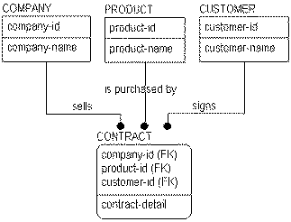
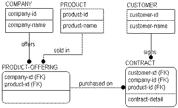

When a single parent-child relationship exists, the relationship is called binary. All of the previous examples of relationships to this point have been binary relationships. However, when creating a data model, it is not uncommon to come across n-ary relationships, the modeling name for relationships between two or more parent entities and a single child table. An example of an n-ary relationship is shown in the following figure:

Like many-to-many relationships, three-, four-, or n-ary relationships are valid constructs in entity relationship diagrams. Also like many-to-many relationships, n-ary relationships should be resolved in later models using a set of binary relationships to an associative entity.
If you consider the business rule stated in the figure, you can see that a CONTRACT represents a three-way relationship among COMPANY, PRODUCT, and CUSTOMER. The structure indicates that many COMPANYs sell many PRODUCTs to many CUSTOMERs. When you see a relationship like this, however, there are business questions that should be answered. For example, �Must a product be offered by a company before it can be sold?� �Can a customer establish a single contract including products from several different companies?� and, �Do you need to keep track of which customers 'belong to' which companies?� Depending on the answers, the structures may change.
For example, if a product must be offered by a company before it can be sold, then you would have to change the structure as follows:

Since PRODUCTs must be offered by COMPANYs, you can create an associative entity to capture this relationship. As a result, the original three-way relationship to CONTRACT is replaced by two, two-way relationships.
By asking a variety of business questions, it is likely that you will find that most n-ary relationships can be broken down into a series of relationships to associative entities.